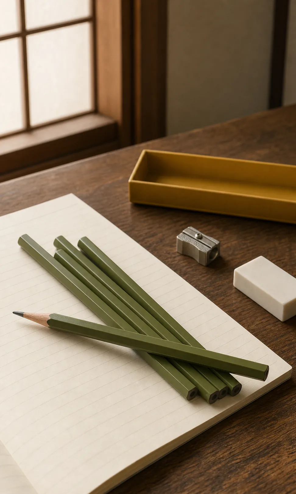

A Japanese classic since 1945
Why Is the Tombow 8900 Japanese Pencil Still Popular?
Mechanical pencils and digital tools are everywhere in Japan, yet the wooden pencil still has a place in classrooms, homes, studios, and offices. It is simple, adjustable, and easy to understand through the movement of the hand.
The Tombow 8900 has accompanied that everyday culture across generations. Born in 1945 for specialized work, it became one of Japan’s familiar standard pencils without losing the restrained design people recognize.
See the Tombow 8900 on Amazon
From reconstruction to everyday writing
The Tombow 8900 was born in 1945.
Tombow’s official history records the 8900’s release in November 1945, the year the war ended. It entered the market as an ultra-luxury, high-quality pencil for photo retouching. Tombow’s anniversary account also connects its fine core to design drafting, blueprints, and the practical work of rebuilding postwar Japan.
That origin makes the 8900 more than an old school supply. It began as a specialist’s instrument, then widened into a standard pencil used for office and study tasks. The product moved from precise professional work into ordinary daily writing while keeping its identity intact.
The strength of a standard
Why is it still popular in Japan?
The 8900 does not depend on a new mechanism or seasonal feature. Tombow sells it as a hexagonal, twelve-pencil case in a range of graphite grades. The hexagonal body stays more readily in place on a desk than a round pencil, and sharpening lets the user choose a fine point, a broad line, or something between.
Its appeal is the basic experience: wood, graphite, paper, and direct feedback from pressure. A pencil can serve handwriting practice, calculations, office notes, sketching, or a draft that needs easy correction. Because the form is familiar and the purpose is clear, it is easy to return to.
- Simple construction with no mechanism to learn.
- A point that can be sharpened for different kinds of lines.
- A hexagonal shape suited to an active desk.
- A broad role across study, home, office, drafts, and sketches.
- A standard design chosen for usefulness rather than novelty.
A design people remember
The pencil many Japanese people recognize.
Tombow says the yellow dozen box and olive-green pencil body reached their familiar form in 1948, three years after launch, and the basic design has remained almost unchanged since then. That visual continuity gives the 8900 two identities at once: a nostalgic object from older desks and a practical tool still sold for present-day work.
A parent and child can recognize the same understated combination of colors. That does not mean every Japanese student uses it, or that every school requires it. It means the object has remained visible long enough to become one of the country’s familiar stationery standards—a design that communicates purpose before personality.
Learning through the hand
Why Do Many Japanese Elementary Schools Prefer Wooden Pencils?
Many Japanese elementary schools ask children to use wooden pencils as their basic writing tool. Some do not allow students to bring mechanical pencils, while others restrict their use during lessons. This is not a Japanese law or a single nationwide rule from the Ministry of Education. It is a school-level decision, and the details vary by school, region, teacher, and grade.
One reason is that younger children are still learning how to hold a pencil, form characters, and control pressure. A wooden pencil’s point gradually changes as it moves across the page, making variations in line thickness and darkness easy to see. Some schools therefore view it as a useful tool for building handwriting fundamentals—not as proof that wooden pencils are inherently better for every learner.
Classroom management also matters. Thin mechanical lead can break, and replacing lead or retrieving a dropped component can interrupt a lesson. A clickable, refillable object can also become something to knock, open, or take apart. Nagasaki City’s Koshima Elementary School, for example, explicitly says mechanical pencils can distract children when they disassemble and play with them; Saitama City’s Higashi-Iwatsuki Elementary cites thin lines, difficulty applying force, and small broken lead among its reasons.
Preparing several sharpened pencils at home can be treated as part of learning to manage school supplies. This practice is visible in Koshima Elementary’s instruction to bring five pencils sharpened at home. By middle school and high school, mechanical pencils become much more common, but individual school rules can still differ.
Why a school may choose wood
- It makes changes in pressure, darkness, and point shape visible.
- It supports practice with grip, strokes, and character forms.
- It avoids fragile lead and loose refill components during class.
- It offers fewer moving parts that may distract younger pupils.
- Sharpening and packing pencils can reinforce preparation routines.
These are common school-level rationales, not a national mandate or a universal educational conclusion.
Two classrooms, more than one rulebook
Wooden Pencils in Japan vs. the United States
Japan
Wooden pencils are the usual starting point in many elementary classrooms. Some schools explicitly prohibit mechanical pencils, with early grades placing particular emphasis on grip, writing pressure, and clearly formed characters. These policies are local rather than national. As students move into middle and high school, mechanical pencils become a familiar everyday choice.
United States
No. 2 wooden pencils are likewise a standard item on many elementary school supply lists. Pinellas County Schools requests No. 2 pencils for both primary and intermediate elementary grades, while individual schools and districts sometimes specify “not mechanical.” There is no single nationwide school rule banning mechanical pencils: permission varies by district, school, teacher, and grade. The variation is visible even within official lists—Albuquerque Public Schools’ Mountain View Elementary requests no mechanical pencils in fourth grade but lists mechanical pencils in fifth grade.
Teachers of younger grades may avoid mechanical pencils because lead can break, small parts can be misplaced, or the mechanism can become a classroom distraction. Older pupils are more likely to be permitted to use them, but neither country can be reduced to one universal practice.
The shared pattern is that wooden pencils remain common in the early grades. Japanese elementary schools are especially visible in publishing explicit no-mechanical-pencil rules, but the examples above show school decisions—not a rule that applies to every child in Japan. American policies are also local, and official supply lists range from wood-only requirements to mechanical-pencil permission in later grades.
This continued place for wooden pencils in Japanese elementary education helps explain why a simple, reliable pencil such as the Tombow 8900 has remained culturally relevant across generations. The 8900 should not be treated as a required school pencil or as the pencil used by most Japanese children; it is better understood as one enduring standard that symbolizes Japan’s broader wooden-pencil culture.
Different tools, different rhythms
Tombow 8900 vs. a modern mechanical pencil.
A wooden pencil and a mechanical pencil solve different problems. The wooden pencil is direct and adjustable: sharpening changes the point, and pressure can create visibly different lines. That makes it natural for early learning, sketches, broad marks, and drafts.
A mechanical pencil needs no sharpener and produces a consistently fine line. It is popular with many middle-school, high-school, and university students who write densely or want a predictable point. Japanese stationery culture has room for both—the classic pencil for tactile flexibility, and the mechanical pencil for controlled precision.
Every graphite routine also needs a way to revise. Continue with our guide to why the MONO eraser became a Japanese stationery classic, then explore A4 and B5 notebooks used by Japanese students and KOKUYO Campus Notebook study culture.
Who is it for?
A classic tool with many quiet uses.
Students
For handwriting practice, calculations, diagrams, drafts, and anyone who prefers an erasable analog tool.
Writers
For notes, outlines, marginal ideas, and the deliberate pace of working on paper.
Artists and sketchers
For users who enjoy changing the point and pressure to move between light construction and darker marks.
Stationery fans and gift buyers
For people interested in authentic Japanese stationery history, simple analog tools, and enduring everyday design.
Recommended cultural experience
Try a practical piece of Japanese stationery history.
The Tombow 8900 is not interesting because it pretends to be new. It is interesting because a pencil created for precise work in 1945 still makes sense on a desk today. For an overseas reader, it offers an accessible way to experience the Japanese respect for simple tools that remain useful long after trends pass.
Visit our Japanese stationery culture guide to discover more notebooks, pencils, pens, and study traditions.
Try One of Japan’s Longest-Selling PencilsConfirm the current grade, pack contents, price, and availability on Amazon before purchasing.
Primary and official sources
Product history was checked against Tombow’s official 8900 product page, company history, and 70th-anniversary history.
Japanese school practices were checked against official guidance from Nagasaki City’s Koshima Elementary School, Saitama City’s Higashi-Iwatsuki Elementary School, and Fukui City’s Asuwa Elementary School. U.S. examples were checked against official supply information from Pinellas County Schools, Elkhorn Public Schools, and Mountain View Elementary School in Albuquerque Public Schools. These examples document variation; they are not presented as nationwide surveys.